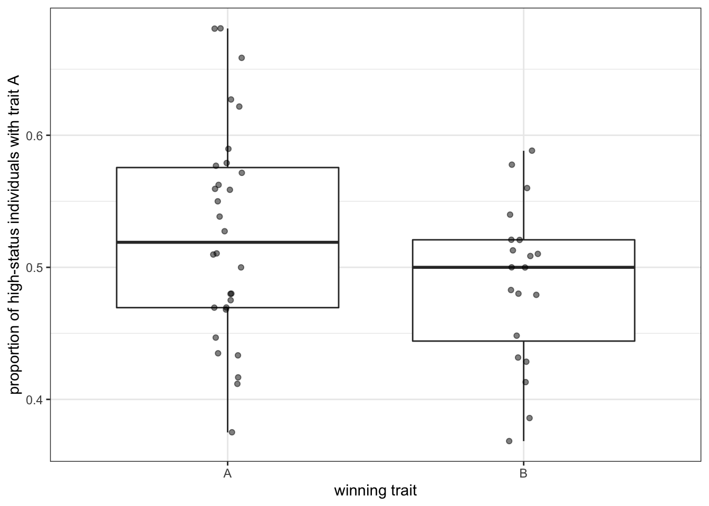

5 Biased transmission (indirect bias: demonstrator)
In the two previous chapters, we started to examine biased transmission, both based on the characteristics of the traits (or direct bias) and on the characteristics of the population. The latter can result from taking into account the frequency of a trait (as we did for conformity) or from taking into account specific features of the demonstrators, which we will look at in this chapter (demonstrator bias is also called ‘model bias’ in cultural evolution).
Whereas the simulations we realised previously are fairly standard, indirect demonstrator-based biased transmission can be implemented in several different ways. Demonstrator biases can result when individuals decide whether to copy or not by taking into account any features of the demonstrators, as long as it is not directly tied to the traits. The most studied demonstrator bias is prestige bias, where individuals are more likely to copy from demonstrators that are considered more ‘prestigious’, for example because other individuals show deference to them. Alternatively, individuals can copy the demonstrators that are more successful, independently from how others judge them, or they can copy individuals that are more similar to them, or older (or younger), and so on. The crux is that the decision is not directly linked to the cultural trait itself.
5.1 A simple demonstrator bias
To implement a simple version of demonstrator-biased cultural transmission, we first need to assume that there are some intrinsic differences in the population. Up until now, our populations were described only by the traits they possessed. We now want that individuals have a feature by which some of them can be distinguished from others, and, as a consequence, being more liked to be copied. We can call this feature ‘status’. An individual’s status is a binary variable that could stand for whether they are prestigious or not, old (young) or not (assuming that the time frame of the simulations is sufficienlty short) or any other features that do not change, and that other individuals can use to decide whether to copy from them or not. We can have a parameter \(p_s\) that determines the probability an individual have an high or a low status.
library(tidyverse)
set.seed(111)
N <- 100
p_0 <- 0.5
p_s <- 0.05
population <- tibble(trait = sample(c("A", "B"), N, replace = TRUE, prob = c(p_0, 1 - p_0)),
status = sample(c("high", "low"), N, replace = TRUE, prob = c(p_s, 1 - p_s))) We can inspect the tibble by typing its name in the R console
population## # A tibble: 100 x 2
## trait status
## <chr> <chr>
## 1 A low
## 2 A low
## 3 B low
## 4 A low
## 5 B low
## 6 B low
## 7 B low
## 8 A low
## 9 B low
## 10 B high
## # … with 90 more rowsWith \(p_s=0.05\) around 5 individuals in a population of 100 will have high status. In this specific case, one of them is individual 10, so it will be one of the individuals that will be likely to be copied more from.
How should the status used to decide whether to copy or not? Again, there are various possibilities. An intuitive way is to assume that the probabilities to pick high-status and low-status individuals as demonstrators are different. So far, when using the function sample to select demonstrators, we did not include any specific probability, so that each individual of the previous generation had the same likelihood to be selected. However, we can pass to the function a vector of probabilites to weight the choice. We can assume that the probability to select high status individuals as demonstrators is always equal to 1 (as in unbiased transmission), but the probability to select low-status individuals is encoded by a further parameter, \(p_\text{low}\): when \(p_\text{low}=1\), the simulations correspond to unbiased transmission, as everybody has the same probability to be chosen, while with \(p_\text{low}=0\), there is a strict model bias, where only high-status individuals are copied.
To implement this, we first store in p_demonstrator the probabilities to be copied for each member of the population:
p_low <- 0.01
p_demonstrator <- rep(1,N)
p_demonstrator[population$status == "low"] <- p_lowAfter that, we sample the traits in the population using these probabilities. Notice the instruction if(sum(p_demonstrator) > 0): this is necessary in case there are not high-status individuals (for example with \(p_s\simeq0\)) and the probability to select demonstrators from low-status one is equal to 0. In this case, the total probability would be also equal to 0, and it would generate an error when the function is run. With this instruction, instead, no copying happens, which is what we would expect in this situation.
if(sum(p_demonstrator) > 0){
demonstrator_index <- sample (N, prob = p_demonstrator, replace = TRUE)
population$trait <- population$trait[demonstrator_index]
}As usual, we can wrap everything in a function.
biased_transmission_demonstrator <- function(N, p_0, p_s, p_low, t_max, r_max) {
output <- tibble(generation = rep(1:t_max, r_max), p = rep(NA, t_max * r_max), run = as.factor(rep(1:r_max, each = t_max)))
for (r in 1:r_max) {
population <- tibble(trait = sample(c("A", "B"), N, replace = TRUE, prob = c(p_0, 1 - p_0)),
status = sample(c("high", "low"), N, replace = TRUE, prob = c(p_s, 1 - p_s)))
output[output$generation == 1 & output$run == r, ]$p <- sum(population$trait == "A") / N # add first generation's p for run r
for (t in 2:t_max) {
p_demonstrator <- rep(1,N)
p_demonstrator[population$status == "low"] <- p_low
if(sum(p_demonstrator) > 0){
demonstrator_index <- sample (N, prob = p_demonstrator, replace = TRUE)
population$trait <- population$trait[demonstrator_index]
}
output[output$generation == t & output$run == r, ]$p <- sum(population$trait == "A") / N # get p and put it into output slot for this generation t and run r
}
}
output # export data from function
}We can now test our simulation, assuming a very low, but not null, probability to select low-status individuals as demonstrators (remember we are using the habitual plot_multiple_runs() function to plot the results of the simulations).
data_model <- biased_transmission_demonstrator(N = 100, p_s = 0.05, p_low=0.0001, p_0 = 0.5, t_max = 50, r_max = 5)
plot_multiple_runs(data_model)
The results are similar to what we saw in the previous chapter) for conformity: one of the two traits quickly reaches fixation. In the case of conformity, however, the trait reaching fixation was the one that happened to have, because of the random initialisation, a slightly higher frequency at the beginning. With a demonstrator bias, this is not the case. The succesfull trait is the one that, irrispectively from its initial frequency, happens to be carried by high-status individuals.
From this perspective, an indirect, demonstrator-based, bias is more similar to unbiased transmission. If you remember from the first chapter, simulations with unbiased transmission also ended up with one trait reaching fixation with small populations (\(N=100\)), but with bigger ones (\(N=10000\)) the frequencies of the two traits remained around \(p=0.5\). What does it happen with a demonstrator bias?
data_model <- biased_transmission_demonstrator(N = 10000, p_s = 0.005, p_low=0.0001, p_0 = 0.5, t_max = 200, r_max = 5)
plot_multiple_runs(data_model)
Even with \(N=10000\), if the number of high-status individuals is sufficiently low, as in this case (\(p_s=0.005\) means that, on average, 50 individuals are high-statuts in each run), traits reach fixation. By reducing the pool of demonstrators, demonstrator-based bias makes drift more important for the overall dynamics. You can experiment with different values of \(p_s\) and \(p_low\). How big can be the pool of high-stats demonstrators before the dynamics become undistinhishable from unbiased transmission.
5.2 Predicting the winning trait
biased_transmission_demonstrator_2 <- function(N, p_0, p_s, p_low, t_max, r_max) {
output <- tibble(status_A = rep(NA, r_max), p = rep(NA, r_max), run = as.factor(rep(1:r_max)))
for (r in 1:r_max) {
population <- tibble(trait = sample(c("A", "B"), N, replace = TRUE, prob = c(p_0, 1 - p_0)),
status = sample(c("high", "low"), N, replace = TRUE, prob = c(p_s, 1 - p_s)))
output[output$run == r, ]$status_A <- sum(population$status == "high" & population$trait == "A") /
sum(population$status == "high")
for (t in 2:t_max) {
p_demonstrator <- rep(1,N)
p_demonstrator[population$status == "low"] <- p_low
if(sum(p_demonstrator) > 0){
demonstrator_index <- sample (N, prob = p_demonstrator, replace = TRUE)
population$trait <- population$trait[demonstrator_index]
}
}
output[output$run == r, ]$p <- sum(population$trait == "A") / N
}
output # export data from function
}data_model <- biased_transmission_demonstrator_2(N = 100, p_s = 0.05, p_low=0.0001, p_0 = 0.5, t_max = 50, r_max = 50)In this case, we do not write a function
data_model <- filter(data_model, p == 1 | p == 0)
data_model[data_model$p==1,]$p <- "A"
data_model[data_model$p==0,]$p <- "B"
ggplot(data = data_model, aes( x = p, y = status_A)) +
geom_boxplot() +
geom_jitter(width=0.05, alpha=0.5) +
labs(y = "proportion of high-status individuals with trait A",
x = "winning trait") +
theme_bw()
data_model <- biased_transmission_demonstrator_2(N = 10000, p_s = 0.005, p_low=0.0001, p_0 = 0.5, t_max = 200, r_max = 50)data_model <- filter(data_model, p == 1 | p == 0)
data_model[data_model$p==1,]$p <- "A"
data_model[data_model$p==0,]$p <- "B"
ggplot(data = data_model, aes( x = p, y = status_A)) +
geom_boxplot() +
geom_jitter(width=0.05, alpha=0.5) +
labs(y = "proportion of high-status individuals with trait A",
x = "winning trait") +
theme_bw()